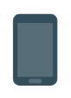

<ion-header>
  <ion-navbar color="primary">
    <button ion-button icon-only menuToggle>
      <ion-icon name="menu"></ion-icon>
    </button>

    <ion-title>
      Lista de dispositivos
    </ion-title>
  </ion-navbar>
</ion-header>
<ion-content >
  <ion-refresher (ionRefresh)="actualizando($event)" >
    <ion-refresher-content></ion-refresher-content>
  </ion-refresher>
  <ion-list>
    <ion-list-header color="light">
      <strong>Dispositivos disponibles</strong>
      <ion-icon item-end name="bluetooth"></ion-icon>
    </ion-list-header>
    <ion-item-sliding *ngFor="let i of arreglo">
      <ion-item>
        <ion-avatar item-start>
          
        </ion-avatar>
      <h2><strong>Nombre:</strong> {{i.name}}</h2>
      <p><strong>Mac:</strong>{{i.address}} </p>
      </ion-item>
      <ion-item-options side="right">
        <button color="light" (click) = "conectar(i);" ion-button><ion-icon name="bluetooth"></ion-icon>Conectar
        </button>
      </ion-item-options>
    </ion-item-sliding>


  </ion-list>
</ion-content>
